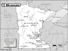

Minnesota

Attention: If you use this or any of the AIRS lists in any state, please report any bad phone numbers or emails to the webmaster. This is the responsibility of all users, including you. Thank you!
Rob Weisel
EMAIL: rw28664_at_hotmail_dot_com
CROSSROADS: I94 & I694
CITY: Woodbury, 55125
PHONE: 612-817-1435
VW'S: 1979 Westy
AVAILABLE: 24x7
I am familiar with: type4 engine
I CAN PROVIDE THE FOLLOWING SERVICES:
INTERNET ACCESS
TOOLS
TRANSPORTATION HELP
MECHANICAL HELP
SPACE TO WORK ON BUS
CAMPING: 3 nights
SPARE ROOM: none
Favorite beer type: Anything cold
Keri
EMAIL: slowvolks AT uslink DOT net
CROSSROADS: Hwy 169 & Hwy 37
CITY: Hibbing
ZIP CODE: 55746
VW'S: '69 camper
COMMENTS: I might be able to meet up for a beer. I have a busy schedule
& don't have much spare time.
I am familiar with: 1600
Favorite beer type: Thick and chewy
Brad
EMAIL: mnexplorer_at_comcast_dot_net
CROSSROADS: I35 and County Road 42
CITY: Burnsville, MN
ZIP CODE: 55306
PHONE: 952-200-6908
VW'S: 1972 Westfalia
I am familiar with: 1500, 1600, dual carbs, type4 engine, wasserboxer, diesel
I CAN PROVIDE THE FOLLOWING SERVICES:
INTERNET ACCESS
TOOLS
TELEPHONE ACCESS
TRANSPORTATION HELP
MECHANICAL HELP
SPACE TO WORK ON BUS
SOME PARTS
COFFEE/TALK
CAMPING: 1 night
SPARE ROOM: 1 night
Favorite beer type: Rare brands
Sam Weyandt
(no email specified)
CROSSROADS: 494 @ 62
Eden Praire, 55346
PHONE: 937-5502
VW'S: 1979 bus
COMMENTS: Will have E-mail shortly
AVAILABLE: Hmmmmm?
familiar with: 1776+, fuel injection
INTERNET ACCESS
TELEPHONE ACCESS
TRANSPORTATION HELP
MECHANICAL HELP
SPACE TO WORK ON BUS
STORAGE SPACE
PARTS AVAILABLE
COFFEE/TALK
SPARE ROOM
CAMPING SPOT: MOVE IN!!! :)
Favorite beer type: Rare brands
denny johnson
djspn@yahoo.com
CROSSROADS: sw mn, hwys 14 & 59
Tracy, 56175
PHONE:507 629 9036
VW'S: 71 bus daily driver
COMMENTS: not a mechanic, but w muir's book, have kept my bus alive and mostly well for 20
years.
AVAILABLE: try anytime 6am- 8pm, may-sept
familiar with: 1600
I CAN PROVIDE THE FOLLOWING SERVICES:
INTERNET ACCESS
TOOLS
TELEPHONE ACCESS
COFFEE/TALK
Todd
(guyote@hotmail.com)
CROSSROADS: 494/55
Minneapolis
PHONE: 763.529.4064
VW'S: 87 WOLFY
AVAILABLE: call Me 6am-6pm
familiar with: 1500, 1600
I CAN PROVIDE THE FOLLOWING SERVICES:
INTERNET ACCESS
TOOLS
TELEPHONE ACCESS
TRANSPORTATION HELP
CAMPING SPOT
Favorite beer type: Thick and chewy
Tim Ray
(raypopp@runestone.net)
CROSSROADS: I-94 and MN. 27
Barrett, 56311
PHONE: 320/986-2822
VW'S: 1976 Westfalia Camper (deluxe version)
COMMENTS: Have an 18-hole disc-golf course on our property, like to play music and visit.
directions to place and info re: our disc golf course can be found at
(http://sumachills.tripod.com/)
AVAILABLE: Monday-Friday after 5:00 p.m. Weekends most all the time
familiar with: 1600, dual carbs, fuel injection
I CAN PROVIDE THE FOLLOWING SERVICES:
INTERNET ACCESS
TOOLS
TELEPHONE ACCESS
MECHANICAL HELP
SPACE TO WORK ON BUS
PARTS AVAILABLE
COFFEE/TALK
CAMPING SPOT: 2 nights
SPARE ROOM: 2 nights
Favorite beer type: Anything cold
Chris Koivisto
EMAIL:koivisto_at_frontiernet_dot_net
CROSSROADS: 70 & 21
Babbitt/Ely, 55706
PHONE: 218-827-3597
VW'S: Mostly projects: 64 Beetle, 74 Super, 69 and 72 Type 2, 92 GTI, 62 Single
Cab
COMMENTS: Have had nice vws but enjoy projects.
AVAILABLE: Hit and miss
I am familiar with: 1600
I CAN PROVIDE THE FOLLOWING SERVICES:
INTERNET ACCESS
TOOLS
TELEPHONE ACCESS
MECHANICAL HELP
SPACE TO WORK ON BUS
COFFEE/TALK
CAMPING: none
SPARE ROOM: none
Favorite beer type: Room temp will do.
jamie mc doanld
twobytwo@scc.net
CROSSROADS: 35W & lake st
minneapolis, 55408
VW'S: 1965\66 army green bus
COMMENTS: I got my VW to use at bike rides and provide neutral support for races.Love
driving it get lots of attention.
AVAILABLE: e-mail me and I will answer when I get it is all I can tell ya.work sleep
ride.work sleep ride
I CAN PROVIDE THE FOLLOWING SERVICES:
INTERNET ACCESS
TELEPHONE ACCESS
TRANSPORTATION HELP
COFFEE/TALK
SPARE ROOM 3 nights
Favorite beer type: Thick and chewy
FRED-Fred's Sign Shop
EMAIL:fcgarnes@ yahoo.com
CROSSROADS: Hwy10 & Hwy 59
Detroit Lakes, 56501
PHONE: 218 847 3973
VW'S: 65 westfauxlia, 83,85 westfalia
COMMENTS: have a bit of knowledge of vanagon waterboxer engines, besides the type1
aircooled engine
AVAILABLE: any time that is reasonable
I am familiar with: 1200, 1500, 1600
I CAN PROVIDE THE FOLLOWING SERVICES
TOOLS
TELEPHONE ACCESS
TRANSPORTATION HELP
MECHANICAL HELP
SPACE TO WORK ON BUS
STORAGE SPACE
SOME PARTS
COFFEE/TALK
CAMPING: 1 night
SPARE ROOM: 1 night
Favorite beer type: Beer is for wimps!
Stefan
EMAIL: streuther_at_johnstech_dot_com
CROSSROADS: 35w & Co Rd D
CITY: Saint Anthony
ZIP CODE: 55421
PHONE: 651-231-2608
VW'S: 70 westy 68 Baja Bug
AVAILABLE: Weekends
I am familiar with: 1600, 1776+
I CAN PROVIDE THE FOLLOWING SERVICES:
INTERNET ACCESS
TOOLS
TRANSPORTATION HELP
MECHANICAL HELP
SOME PARTS
COFFEE/TALK
CAMPING: none
SPARE ROOM: 1 night
Favorite beer type: Anything cold
Hans
EMAIL: SewardBishop_at_rocketmail_dot_com
CROSSROADS: I-35W & I-394
Minneapolis, 55408
PHONE: 612.871.9381
VW'S: 82 Westfalia Campmobile
COMMENTS: I do a 3 month trip thru the west coast and mexico in the winters.
My new 82 vanagon has mondo problems, but I'm still enamored with it. I do
software. I don't do hardware or cars.
I CAN PROVIDE THE FOLLOWING SERVICES
INTERNET ACCESS
TELEPHONE ACCESS
COFFEE/TALK
CAMPING: none
SPARE ROOM: none
Favorite beer type: Thick and chewy
John
EMAIL: culthart_at_yahoo_dot_com
CROSSROADS: hwy 10 and 27
Little Falls, 56345
PHONE: 320-616-6905
VW'S: 1991 westfalia vanagon
COMMENTS: I am a novice, pretty new at this game, but I am enjoying the heck out
of my westy!
AVAILABLE: during the summer, I might be on the road, during the school year
evenings and weekends
I CAN PROVIDE THE FOLLOWING SERVICES
INTERNET ACCESS
TELEPHONE ACCESS
TRANSPORTATION HELP
COFFEE/TALK
CAMPING: none
SPARE ROOM: 1 night
Favorite beer type: Non Alcoholic
Parker Wulf
EMAIL: badvdub_at_gmail_dot_com
CROSSROADS: Hwy 2 and Hwy 220
CITY: Fisher
ZIP CODE: 56723
COUNTRY: no
PHONE: 218-831-3977
VW'S: 1987 Scirocco 2.0 16v, 1992 Passat 16v Wagon
AVAILABLE: Any day, Between 11:00pm and 7:00am emergency only!
I am familiar with: fuel injection, conversions
I CAN PROVIDE THE FOLLOWING SERVICES:
INTERNET ACCESS
TOOLS
TELEPHONE ACCESS
MECHANICAL HELP
SPACE TO WORK ON BUS
STORAGE SPACE
SOME PARTS
COFFEE/TALK
CAMPING: 4 nights or more SPARE ROOM: 4 nights or more
Favorite beer type: Beer is for wimps!
Briar Buscho
EMAIL: bugsnstuff69_at_yahoo_dot_com
CROSSROADS: I-35, MN state highway 14
CITY: Medford
ZIP CODE: 55049
PHONE: 507-444-0266
VW'S: ('62, '66, '67, '70, '72 Type 1) ('71, '72, '74, '81 Type 2)( '61, '71
KG)('73 914) ('73?412)('72 Super Beetle-Chevy Hybrid trail buggy)
COMMENTS: About 6 blocks or so east of I-35, near gas, food, beer and city park.
Have some spare parts, can get new same day (mon- fri).
Can provide welding (MIG-TIG) and fabrication.
Have camper w/ electicity.
If offroad inclined, can go to Pit 1/2 hour away.
AVAILABLE: after 5pm(mon-thur), whenever(fri-sun)
I am familiar with: 1200, 1300, 1500, 1600, dual carbs, fuel injection, type4
engine
I CAN PROVIDE THE FOLLOWING SERVICES
INTERNET ACCESS
TOOLS
TELEPHONE ACCESS
TRANSPORTATION HELP
MECHANICAL HELP
SPACE TO WORK ON BUS
SOME PARTS
COFFEE/TALK
CAMPING: 4 nights or more
SPARE ROOM: 4 nights or more
Favorite beer type: Commercial brands
Pat & Erica
CROSSROADS: Off of Hwy 61
CITY: Duluth, 55804
PHONE: 218-525-2250
VW'S: 82 westy
COMMENTS: I have tools and some diagnostic equipment. I am quite
mechanical so I can usually help with most problems.
AVAILABLE: Summer - Anytime / Otherwise - Weekends & evenings
I am familiar with: fuel injection, type4 engine, wasserboxer
I CAN PROVIDE THE FOLLOWING SERVICES:
INTERNET ACCESS
TOOLS
TELEPHONE ACCESS
TRANSPORTATION HELP
MECHANICAL HELP
SPACE TO WORK ON BUS
CAMPING: 1 night
SPARE ROOM: none
Favorite beer type: Micro brands
Steve
EMAIL: mnflyer_at_yahoo_dot_com
CITY: Minneapolis
ZIP CODE: 55410
VW'S: 1970 Campmobile
COMMENTS: I'm new to VW's so my contacts are limited but I'm learning.
Willing to help with communications and possibly transportation.
AVAILABLE: most any time - could be off traveling in my campmobile :-)
I CAN PROVIDE THE FOLLOWING SERVICES
INTERNET ACCESS
TELEPHONE ACCESS
TRANSPORTATION HELP
CAMPING: none
SPARE ROOM: none
Favorite beer type: Thick and chewy
Matthew/kraker
EMAIL: kraker 829 at yahoo dot com
CROSSROADS: I 90 and Hwy 63
CITY: Rochester
ZIP CODE: 55904
PHONE: 507-536-4066
VW'S: vw rail
COMMENTS: I have a car hauler and storage space.I'm not available 24/7.In an
emergency I will make something work though.
AVAILABLE: If I answer I'm awake If not leave a message
I am familiar with: 1600, 1776+
I CAN PROVIDE THE FOLLOWING SERVICES
INTERNET ACCESS
TOOLS
TELEPHONE ACCESS
TRANSPORTATION HELP
MECHANICAL HELP
SPACE TO WORK ON BUS
STORAGE SPACE
SOME PARTS
COFFEE/TALK
CAMPING: 2 nights
SPARE ROOM: none
Favorite beer type: Commercial brands
Ted
CROSSROADS: Johnson and Lowry
CITY: Minneapolis
PHONE: 612.781.2664
VW'S: 72 Transporter
COMMENTS: I'm currently polishing small impurities on my bus. Learning lots
about body work, but looking to learn even more in the engine area.
AVAILABLE: Weekends Only
I CAN PROVIDE THE FOLLOWING SERVICES
TELEPHONE ACCESS
TRANSPORTATION HELP
CAMPING: none
SPARE ROOM: none
Favorite beer type: Anything cold
lescaster
EMAIL: thomas_butler_at_msn_dot_com
CROSSROADS: 394 - highway 100
CITY: robbinsdale
ZIP CODE: 55422
PHONE: (763) 588-9493
VW'S: 1987 vanagon syncro
COMMENTS: just got my syncro - know little or nothing about them. I do
have some tools and if it's warm (non-winter) a driveway to work in.
AVAILABLE: I work weird hours - but I do check for messages
I CAN PROVIDE THE FOLLOWING SERVICES
INTERNET ACCESS
TOOLS
TELEPHONE ACCESS
TRANSPORTATION HELP
SPACE TO WORK ON BUS
CAMPING: 3 nights
Favorite beer type: Anything cold
Josh Dickinson
EMAIL: josh_at_oldskoolkustoms_dot_com
CROSSROADS: CR 75 and Hwy 25
CITY: MONTICELLO
ZIP CODE: 55362
PHONE: 763-295-6824
VW'S: 66 Panel, 66 Deluxe, 57 Oval
COMMENTS: I have a full shop available for emergency repairs.
AVAILABLE: Any Time
I CAN PROVIDE THE FOLLOWING SERVICES
INTERNET ACCESS
TOOLS
TELEPHONE ACCESS
TRANSPORTATION HELP
MECHANICAL HELP
SPACE TO WORK ON BUS
STORAGE SPACE
COFFEE/TALK
CAMPING: 2 nights
SPARE ROOM: none
Favorite beer type: Anything cold
Brian Anderson
EMAIL: brian_janna_at_yahoo_dot_com
CROSSROADS: Hwy 55 and Cnty Rd 92
CITY: Rockford
ZIP CODE: 55373
PHONE: 763-744-6326
VW'S: '72 Super Beetle
COMMENTS: Spare room for emergency use only.
AVAILABLE: Evenings till 9pm, weekdays only via phone, weekends anytime
I am familiar with: 1600
I CAN PROVIDE THE FOLLOWING SERVICES
INTERNET ACCESS
TOOLS
TELEPHONE ACCESS
MECHANICAL HELP
COFFEE/TALK
CAMPING: none
SPARE ROOM: 1 night
Favorite beer type: Rare brands
Brett AKA Bsquare
EMAIL: 65variant_at_gmail_dot_com
CROSSROADS: I-35W & I-694
CITY: Northeast Minneapolis
ZIP CODE: 55418
PHONE: 612720-3280
VW'S: 65 &71 squarebacks
I am familiar with: 1600, 1776+, dual carbs
I CAN PROVIDE THE FOLLOWING SERVICES
INTERNET ACCESS
TOOLS
TELEPHONE ACCESS
MECHANICAL HELP
SPACE TO WORK ON BUS
SOME PARTS
CAMPING: none
SPARE ROOM: none
Michael Beach
EMAIL: mbeach969_at_hotmail_dot_com
CROSSROADS: US 169 & US 10
CITY: elk river, 55330
PHONE: 580-229-6009
VW'S: 69 T-26, 71 T-26
COMMENTS: have been in the VW thing for years now. can work on just about any
part of a vw. dont know it all but i usualy have the tools to get the job done.
i have an Oklahoma # but will be in Minn. for the next 3 months or more. so dont
freat over it.
AVAILABLE: any reasonable time.
I am familiar with: 1600, dual carbs, type4 engine
I CAN PROVIDE THE FOLLOWING SERVICES:
TOOLS
TRANSPORTATION HELP
MECHANICAL HELP
COFFEE/TALK
Favorite beer type: Room temp will do.
Luke
EMAIL: lsamaha_at_comcast_dot_net
CROSSROADS: Hennepin Ave. & 13th St.
CITY: Minneapolis, 55403 PHONE: 612-384-5496
VW'S: 59 Beetle
AVAILABLE: MON-FRI 4pm-12am SAT-SUN
I am familiar with: 25/36hp, 1200/1300, 1500/1600
I CAN PROVIDE THE FOLLOWING SERVICES
INTERNET ACCESS
TOOLS
TELEPHONE ACCESS
TRANSPORTATION HELP
MECHANICAL HELP
SOME PARTS/CAN GET THEM
CAMPING: none SPARE ROOM: none
{kind=link}